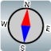

► O que é o aplicativo A-GPS Tracker?
► Recursos Principais
► Desempenho e Precisão A-GPS
► Arquivos e Trilhas GPX
► Botões de Controle
► Solução de Problemas
► Créditos
O que é o aplicativo A-GPS Tracker?
O A-GPS Tracker gerencia sua posição geográfica e altitude usando os recursos de GPS e localização assistida (A-GPS) do seu telefone. Uma vez iniciada a gravação, o app monitora sua rota continuamente, mesmo com a tela desligada ou durante o uso de outros aplicativos.
Projetado especialmente para trilheiros, caminhantes e ciclistas que desejam registrar uma nova rota, seguir um percurso ou garantir que não se perderão no caminho de volta.
Para o guia de mapas offline e curvas de nível, consulte AGPS-TrackerOm (Mapas Offline e DEM).
Recursos Principais
- Altitude real: em metros em relação ao nível médio do mar (MSL).
- Coordenadas: em graus decimais e coordenadas UTM-WGS84.
- Trilhas no Mapa: exibição visual, armazenamento local e exportação GPX.
- Pontos de Interesse (POIs / Waypoints): marcação de pontos com nome e descrição.
- Perfil Altimétrico: gráfico de altitude versus distância percorrida.
- Estatísticas: tempo líquido de caminhada, velocidade média e elevação acumulada.
Desempenho e Precisão A-GPS
- Defina a localização como Alta Precisão (com GPS, redes móveis e Wi-Fi ativados).
- Ao ar livre, o primeiro ponto é fixado em menos de um minuto graças aos dados de satélite assistidos.
- Mesmo sem sinal de celular nas montanhas, o GPS continua operando 100% offline.
Arquivos e Trilhas GPX
As trilhas são salvas no formato aberto GPX (GPS Exchange Format), compatível com Wikiloc, Strava e Garmin.
Botões de Controle
- Gravar: inicia ou pausa a gravação da rota.
- Adicionar POI: insere um ponto de interesse.

Bússola: orientação norte ou direção de caminhada.- Perfil: exibe o perfil de altitude.
Solução de Problemas (Bateria e Armazenamento)
- Desative a otimização de bateria para o A-GPS Tracker.
- Conceda a permissão de localização "Permitir o tempo todo".
- Selecione uma pasta persistente dedicada (nome sugerido:
AGPS-Tracker).
Créditos
O A-GPS Tracker foi originalmente criado por Giobat e hoje é mantido pela comunidade de código aberto.